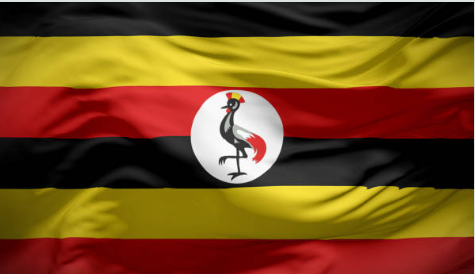

About Me
I am Baluku Josephats, a software development student at Brigham Young University (BYU), originally from Uganda. As a member of The Church of Jesus Christ of Latter-day Saints (LDS), my faith plays a central role in shaping who I am and how I approach life. Growing up in Uganda, I developed a passion for technology, which led me to pursue software development. At BYU, I am dedicated to deepening my understanding of the field and gaining the skills necessary to create innovative solutions. Whether it's web development, mobile apps, or other areas of software engineering, I aim to contribute to projects that can make a positive difference. Beyond academics, my LDS values such as integrity, service, and collaboration guide me in everything I do. I strive to live these principles in my studies, work, and relationships, always aiming to grow as an individual while making meaningful contributions.
Masaka, Uganda

Uganda, located in East Africa, is known for its rich natural beauty and diverse wildlife. Often called the "Pearl of Africa," it features landscapes ranging from the snow-capped Rwenzori Mountains to the savannahs and the shores of Lake Victoria. Uganda is home to over 50 ethnic groups and has a vibrant culture influenced by music, dance, and storytelling. The economy is primarily agricultural, with coffee being a key export. The country is also famous for its mountain gorillas. While Uganda faces challenges like poverty and healthcare, it is steadily advancing in areas such as technology and tourism.